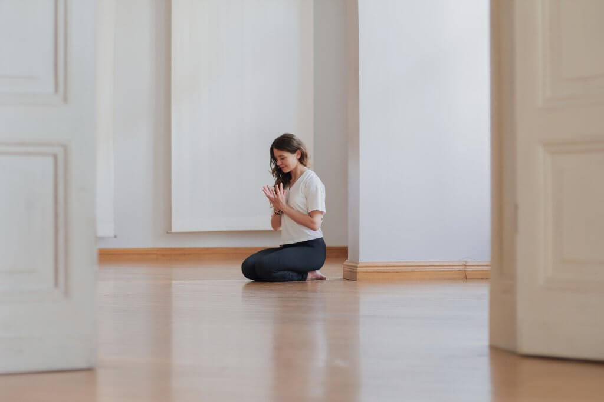
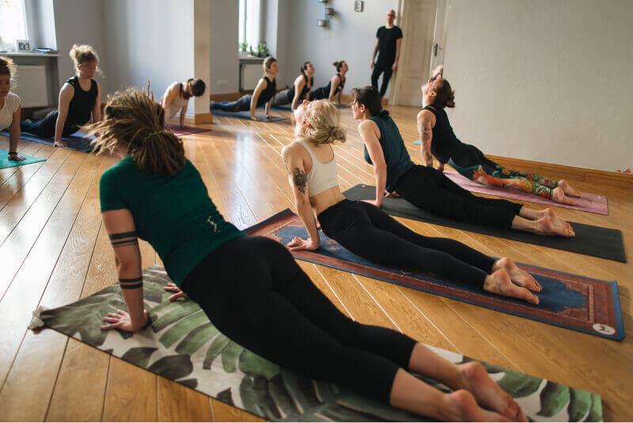

Tam, gdzie joga spotyka fizjoterapię, neuronaukę i sztukę.
Kameralna szkoła jogi i centrum świadomego ruchu w sercu Poznania. Nie uczymy tylko pozycji — uczymy Twoje ciało i układ nerwowy wracać do równowagi, bezpiecznie i z uwagą, także jeśli zaczynasz od zera.
Jedno centrum — pięć światów praktyki
Ten sam zespół prowadzi Cię od pierwszej pozycji, przez pracę z bólem i stresem, aż po ścieżkę nauczycielską. To rzadka głębia jak na jedną szkołę — i właśnie ona sprawia, że warto tu zostać na lata.
Ruch bez bólu
Joga łączona z wiedzą fizjoterapeutyczną, mobilnością i pilatesem.
Regulacja i uważność
Medytacja, oddech i mindfulness (MBSR) oparte na neuronauce.
Prosto z Mysore
Ashtanga w autoryzowanej linii Pattabhiego i Sharatha Joisa.
Joga + muzyka na żywo
Wieczory z fortepianem, dźwiękiem i głęboką regeneracją.
Joga dostępna dla każdego ciała
Wierzymy, że wszyscy ludzie są równi w prawie do szacunku. Uczymy uważnej obserwacji ciała i całościowego podejścia do człowieka — praktyki, która wspiera zarówno ciało, jak i umysł, jako integralna część zdrowego życia.
Znajdź swoją drogę
Nie musisz być rozciągnięty ani mieć doświadczenia. Wskażemy Ci ścieżkę dopasowaną do ciała i celu.
Pierwsza joga w życiu
Łagodny, bezpieczny start dla początkujących — bez presji i porównań.
Ruch bez bólu
Joga + fizjoterapia + Rolfing dla osób z napięciami i po urazach.
Pogłębianie praktyki
Ashtanga, mobilność, wygięcia i inwersje dla praktykujących.
Zostań nauczycielem
Kursy 200h / 300h akredytowane przez Yoga Alliance.
Piękna kamienica w centrum
Kursy, warsztaty i wyjazdy
Przez cały rok organizujemy kursy dla początkujących, warsztaty tematyczne i wyjazdy z jogą — w opcjach weekendowych i tygodniowych.

Spotkanie w ciszy
„…całe moje doświadczanie odbywa się tylko wewnątrz mnie, wewnątrz granic mojego ciała. zachodzi nieustannie z chwili na chwilę. żyję tylko w tu i teraz…” — Janet Adler
Wyjątkowe wydarzenie, które poprowadzi Justyna Liberska.

Kurs dla początkujących: Ashtanga krok po kroku
Dla osób chcących gruntownie poznać Pierwszą Serię Ashtanga Jogi od podstaw — lub metodycznie wzmocnić obecną praktykę. Przejdziemy przez Pierwszą Serię krok po kroku, by świadomie i bezpiecznie wykonywać następujące po sobie sekwencje asan.
Nad morze i w góry — kilka razy w roku
Niezależnie od tego, czy praktykujesz od miesiąca czy od lat, wyjazd to wyjątkowa okazja, by pogłębić praktykę. Ilość czasu poświęcanego codziennej praktyce — pod okiem doświadczonych prowadzących — jest kluczowa dla rozwoju. Wyjazdy dają konkretne narzędzia, które zabierasz ze sobą do codzienności.
To także świetna okazja, by poznać ludzi o podobnej wrażliwości i po prostu pobyć w nowym miejscu, we wspólnym doświadczeniu i inspirujących rozmowach. Wybieramy miejsca dogodne dla praktyki jogi i medytacji, dbając o zbilansowane wegetariańskie wyżywienie.
Co mówią o nas praktykujący
Prawdziwe opinie naszej społeczności — kliknij, by powiększyć.
Najczęstsze pytania
Wszystko, co warto wiedzieć, zanim staniesz na macie po raz pierwszy.
Zacznij swoją praktykę
Zadzwoń lub napisz — pomożemy dobrać zajęcia i karnet do Twoich potrzeb i możliwości.
Zadzwoń: 505 904 825